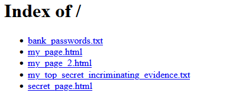

Open the file "C:\Apache24\conf\httpd.conf" with a text editor.
Lines starting with a "#" are comments, which means they don't do anything; they just help explain. You will notice that most of the lines are comments, because web servers are complicated and we really need them to figure out what's going on.
If you follow this guide and leave everything as the default, you won't need to change the following options, but they are important:
The following option is not set by default, which is why we got the warning in the "Installation" step. It is currently commented out with a "#". Remove the "#".
Obtaining a readable address like "example.com" will be discussed in a later section. For now, set it to your public/routable IP address with a port of 80. For example, my setting is "ServerName 67.198.92.243:80".
To find your IP address, the easiest way is to go to a website that tells it to you, such as this one.
You should always have security in mind when configuring your web server. By default, everything inside your DocumentRoot is publicly accessible to everyone on the internet. Sensitive information (configuration files, passwords, etc.) should not be in the DocumentRoot. If you do need to add sensitive information, configure it so that it is not public.
Many security vulnerabilities are caused by incorrect configuration. The config file gives a "friendly" reminder:
# Do NOT simply read the instructions in here without understanding
# what they do. They're here only as hints or reminders. If you are unsure
# consult the online docs. You have been warned.
The same applies to this guide. If you don't understand how to configure something, do more research. Don't just guess.
Access control is done using a series of scopes, defined by a <Directory> tag (other similar tags exist). Inside the tag is a series of configuration values that apply to everything in that folder (even subfolders).
If multiple scopes apply, the more specific one overrides the less specific one. For example, if you grant access to "C:\folder1\aaa", but deny access to "C:\folder1\aaa\bbb", then everyone will have access to "folder1\aaa" but won't have access to "folder1\aaa\bbb".
By default, there are two entries. One that blocks access to everything, and one that grants access to everything inside the htdocs folder, which looks like this:
<Directory "${SRVROOT}/htdocs">
#
# Possible values for the Options directive are "None", "All",
# or any combination of:
# Indexes Includes FollowSymLinks SymLinksifOwnerMatch ExecCGI MultiViews
#
# Note that "MultiViews" must be named *explicitly* --- "Options All"
# doesn't give it to you.
#
# The Options directive is both complicated and important. Please see
# http://httpd.apache.org/docs/2.4/mod/core.html#options
# for more information.
#
Options Indexes FollowSymLinks
#
# AllowOverride controls what directives may be placed in .htaccess files.
# It can be "All", "None", or any combination of the keywords:
# AllowOverride FileInfo AuthConfig Limit
#
AllowOverride None
#
# Controls who can get stuff from this server.
#
Require all granted
</Directory>
Caution: "Indexes" is enabled by default. This means that people can see a listing of all the files/folders within the specified folder. Even though everything in your DocumentRoot should be treated as public unless manually changed, this might not be what you want:
Remove "Indexes" if you don't need an automatic file listing.
See the introduction for a short explanation of port forwarding.
This process is a bit tricky because the exact steps depend on what kind of router you have. The general process will look something like this:
| Previous: Installation | Index | Next: Putting Content on the Server |